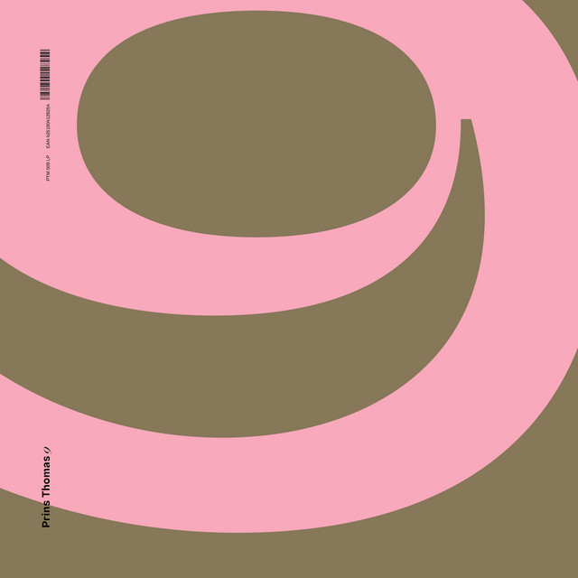

Prins Thomas - 9



Información del álbum facilitada por discogs.com:
Fecha de lanzamiento: 2010
Géneros: {‘Electronic’}
Estilos: {‘House, Deep House, Disco’}
Tracklist:
-
Ørkenvandring 8:30
-
Uggebugg 8:42
-
Slangemusikk 9:50
-
Sauerkraut (feat. Lindstrøm & Terje Olsen) 10:15
-
Wendy Not Walter (feat. Lindstrøm) 9:29
-
Nattønsket 7:06
-
Åttiåtte 6:15